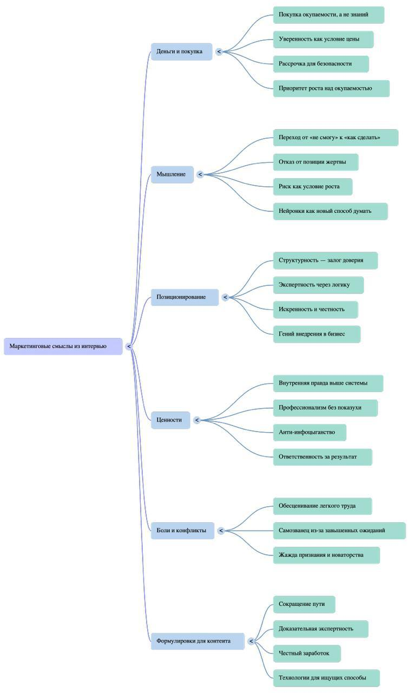
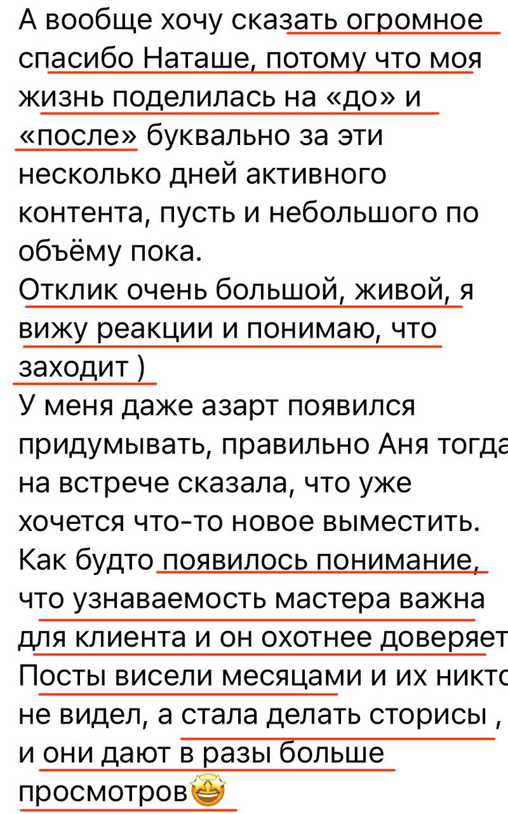

Что есть сейчас, где теряется доверие, что мешает заявкам.
VK • контент • воронки • автоматизация
Ведение сообщества ВК как маркетинг-система
Для экспертов и предпринимателей, у которых контент выходит то густо, то пусто, времени не хватает, а из соцсетей нужны не просто охваты, а заявки.
- Стратегия и распаковка перед контентом
- Упаковка сообщества под заявки
- Контент, прогрев и базовая автоматизация
Система вместо хаоса
Собираю сообщество как рабочую маркетинговую схему
В проекте появляется понятная логика: кто ваша аудитория, что ей важно, какие смыслы нужны в контенте и где человек оставляет заявку.
Сегменты ЦА, боли, желания, возражения и контентные триггеры.
Обложка, закреп, меню, услуги, кнопки и понятный путь пользователя.
Посты, stories, клипы и ролики не «по вдохновению», а под задачу.
Точки сбора заявок, простая автоматизация и прогрев внутри сообщества.
Кому подходит
Если соцсети нужны не «для галочки»
Экспертам
Когда есть опыт и продукт, но контент ведётся то густо, то пусто, сложно объяснить ценность и регулярно доводить интерес до заявки.
Предпринимателям
Когда времени на соцсети не хватает, сообщество уже есть, но оно не помогает продажам: нет структуры, пути клиента и системного прогрева.
Тем, кто хочет делегировать
Когда вы готовы передать контентную часть, но хотите, чтобы исполнитель думал стратегически, а не просто публиковал посты.
Пакеты услуг
Выберите формат под вашу задачу
Первый уровень можно посмотреть быстро, а подробности раскрываются внутри каждого пакета. Так видно не только цену, но и всю логику работы.
ежемесячное сопровождение
Маркетинговое сопровождение ВК
15 000 ₽/мес
Подходит экспертам и предпринимателям, которые хотят регулярно вести соцсети, привлекать клиентов и делегировать контентную часть.
Анализ проекта
- Брифинг и погружение в проект.
- Аудит текущего сообщества.
- Распаковка эксперта или бизнеса.
- Выявление сильных сторон, преимуществ и точек роста.
Анализ целевой аудитории
- JTBD-анализ: зачем человек покупает и какую задачу решает.
- Потребности, страхи, желания и возражения аудитории.
- Понимание барьеров покупки и триггеров принятия решения.
Анализ конкурентов
- Анализ позиционирования.
- Разбор контента и предложений конкурентов.
- Поиск возможностей для отстройки.
Упаковка сообщества
- Аудит и доработка сообщества.
- Обложка, аватар, меню и закреплённый пост.
- Визуальное оформление с помощью нейросетей без сложного дизайнерского макета.
- Настройка структуры, простых воронок продаж и точек сбора заявок.
- Базовая автоматизация процессов.
Матрица контента
- Распределение контента по сегментам аудитории.
- Система контента на основе потребностей клиентов.
- Учет степени осознанности аудитории.
- Темы, которые привлекают, прогревают и продают.
Контент и аналитика
- Идеи для постов, Stories, Reels и клипов.
- Сценарии для видео, тексты постов и Stories.
- Публикация контента.
- Ежемесячный анализ результатов и рекомендации по развитию.
Не входит:
съёмка контента, монтаж видео, настройка таргетированной рекламы, сложный дизайнерский контент.
сопровождение + видео Полное маркетинговое сопровождение 20 000 ₽/мес
Включает всё, что входит в пакет «Маркетинговое сопровождение ВК», и добавляет работу с короткими роликами.
Дополнительно
- Съёмка до 15 роликов в месяц.
- Монтаж до 15 роликов в месяц.
- Оформление и подготовка роликов к публикации.
- Описание под роликом и связка с общей контент-логикой.
Не входит
- Настройка таргетированной рекламы.
- Сложный дизайнерский контент.
разовая работа Упаковка и настройка сообщества 20 000 ₽
Формат для тех, кому нужно привести сообщество в порядок, сделать понятную структуру и подготовить его к продвижению.
Что входит
- Анализ текущего сообщества.
- Оформление: обложка, аватар, меню, закреплённый пост.
- Визуальное оформление с использованием нейросетей без сложного дизайнерского макета.
- Настройка структуры сообщества для удобства пользователей.
- Создание и настройка воронки продаж внутри сообщества.
- Пути пользователя: куда перейти, что прочитать, где оставить заявку.
- Описание услуг и продуктов.
- Настройка кнопок, ссылок и разделов.
- Рекомендации по дальнейшему развитию.
работа рядом с вами Индивидуальное сопровождение 30 000 ₽/мес
Подходит экспертам и предпринимателям, которые хотят сами разобраться в маркетинге, но не в одиночку, а с моей поддержкой. Работа строится под вашу нишу, цели, график и возможности.
Что входит
- Обучение основам маркетинга на вашем проекте.
- Разбор целевой аудитории и анализ конкурентов.
- Позиционирование и упаковка продукта или услуги.
- Контент-стратегия и воронка продаж.
- Идеи для продвижения и помощь с соцсетями.
- Внедрение нейросетей в работу.
- Проверка ваших материалов и обратная связь.
- Созвоны, разборы и поддержка в чате.
Как это выглядит
Вы всё делаете своими руками, но не вслепую. Я объясняю, что делать, зачем это нужно, как применить это именно в вашем проекте, смотрю результат и помогаю докручивать.
техническая настройка Чат-боты и автоматизация от 10 000 ₽
Стоимость зависит от сложности задачи. Подходит, если нужно собрать заявки, выдать материалы, прогреть аудиторию или связать соцсети с оплатой и сервисами.
Можно настроить
- Сбор заявок.
- Запись на консультацию.
- Выдачу материалов.
- Автоворонку и прогрев через сообщения.
- Ответы на частые вопросы.
- Связку с оплатой или другими сервисами.
Как работаем
Сначала система, потом контент
Диагностика
Смотрим проект, продукт, аудиторию, текущую упаковку и точки, где теряются заявки.
Позиционирование
Формулируем, чем вы отличаетесь, какие смыслы стоит показывать и как говорить с аудиторией.
Внедрение
Настраиваем сообщество, путь клиента, контент, публикации, воронки и нужные автоматизации.
Аналитика
Отслеживаем результат, усиливаем рабочие темы и корректируем следующие действия.
Обо мне
Я Наташа Малина — системный маркетолог
Я смотрю на соцсети не как на набор постов, а как на систему: экспертность, позиционирование, контент, путь клиента, воронка, заявки и повторная работа с аудиторией.
У меня экономическое образование, 10 лет опыта в экономике и 5 лет в маркетинге. В работе соединяю аналитику, распаковку эксперта, контент-стратегию, нейросети, чат-боты и понятную техническую реализацию.
Фрагменты работы
Что стоит за «ведением сообщества»
Не только публикации, а карты смыслов, матрицы контента, структура пути клиента и решения, которые можно внедрить.

матрица контента
что публикуем и зачем
сегментбольсмыслдействие
новыене понимаю ценностьпоказать системувступить
тёплыенет времениделегировать без хаосанаписать
сомневаютсябоюсь без результатадоказательства и отзывыоставить заявку
упаковка сообщества
точки контакта
обложка
услуги
описание
заявка

Связаться
Расскажите, что хотите привести в порядок
Напишите мне, какая у вас ниша, что уже есть в сообществе и какой формат интересен. Я подскажу, с какого пакета лучше начать.